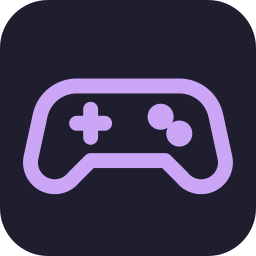
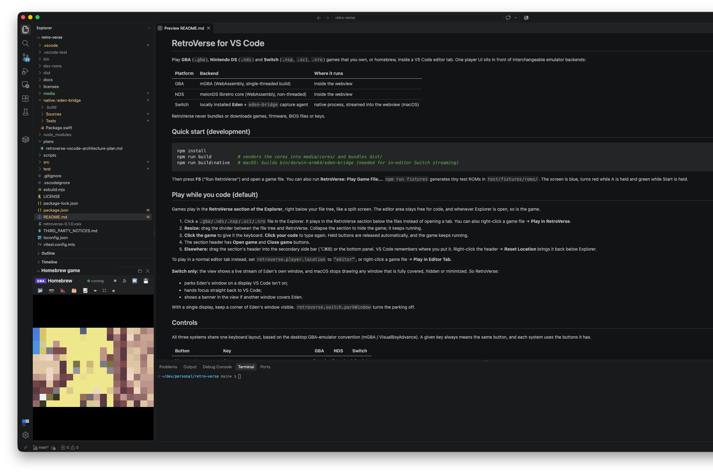
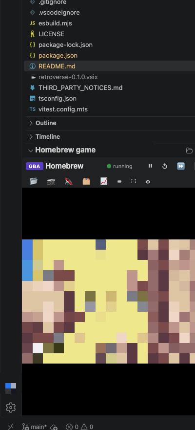

Game Boy Advance
.gba files run in mGBA, compiled to WebAssembly, inside VS Code. Battery saves, save
states, screenshots and turbo work.

Play Game Boy Advance, Nintendo DS and Nintendo Switch games in a section of the VS Code Explorer, right below your files, and keep coding in the editor next to it.
Free and open source (GPL-3.0-or-later). Requires VS Code 1.95 or later. Switch streaming needs macOS on Apple Silicon.

.gba files run in mGBA, compiled to WebAssembly, inside VS Code. Battery saves, save
states, screenshots and turbo work.
.nds files run in melonDS, compiled to WebAssembly. Both screens show in the player, and
the mouse works as the stylus on the touch screen.
.nsp, .xci and .nro files open in Eden, which you install
yourself. RetroVerse streams Eden's window into VS Code and sends your input back.
RetroVerse does not include or download any games, BIOS files, firmware or keys. Use homebrew or games you own.
code --install-extension retroverse.vsix... menu and choose Install from VSIX...Click a game file in the Explorer. Instead of opening an editor tab, the game starts in the RetroVerse section at the bottom of the Explorer. You can also right-click a game file and choose Play in RetroVerse.
Drag the divider above the section to give the game more room, or collapse the section to hide it. The game keeps running while it is hidden.
Click the game to give it the keyboard and click your code to type again. RetroVerse releases any held buttons when the game loses focus.
The section can also live in the secondary side bar or the bottom panel. Drag its header there and VS Code remembers the place.

All three systems share one keyboard layout, based on desktop GBA emulators such as mGBA and VisualBoyAdvance. A key means the same button on every system.
| Button | Key | GBA | DS | Switch |
|---|---|---|---|---|
| Movement | Arrow keys | D-pad | D-pad | Left stick |
| D-pad on Switch | I, J, K, L | yes | ||
| A / B | X / Z | yes | yes | yes |
| L / R | A / S | yes | yes | yes |
| Y / X | C / V | yes | yes | |
| ZL / ZR | Q / W | yes | ||
| Start (+) | Enter | yes | yes | yes |
| Select (-) | Backspace or Right Shift | yes | yes | yes |
| Home | H | yes | ||
| Turbo | Hold Tab, or Shift+Tab to toggle | yes | yes | yes |
| Quick save / load | F5 / F8 | yes | yes |
Standard gamepads work without setup. To change a key, set retroverse.input.keyboard, for
example { "A": "KeyK" }. The Keys button in the player toolbar shows the current
layout.
RetroVerse does not include a Switch emulator. Install Eden first.
RetroVerse finds eden-cli on your PATH or Eden.app in
/Applications or ~/Applications, or you can set
retroverse.switch.edenPath.
When you open a Switch game, RetroVerse starts Eden and a small capture agent. The agent records Eden's window and audio and sends them to VS Code over a local connection that only accepts the current session. Your input goes back to Eden as the key presses Eden is configured for.
The first time, macOS asks you to allow VS Code two permissions under Privacy & Security: Screen Recording for the picture and sound, and Accessibility for input. Until you allow them, Eden runs in its own window and RetroVerse shows buttons that open the right settings page.
macOS stops drawing a window that is covered, hidden or minimized. RetroVerse moves Eden's window to a display that VS Code is not on, gives focus back to VS Code, and tells you when another window covers Eden. With one display, keep part of Eden's window visible.
If Eden's GDB stub is on, RetroVerse connects to it so the game does not wait on "Launching...". On macOS it also applies two MoltenVK settings that prevent a known Vulkan crash. Both can be turned off in the settings.
GBA and DS saves and save states are stored in VS Code's extension storage, keyed by a hash of the game
file, so renaming or moving a game keeps its progress. RetroVerse: Open Saves Folder shows where
they are, and retroverse.storage.savesDirectory moves them. Switch saves stay in Eden.
... menu at the top of the Explorer and turn on RetroVerse, or right-click its
header and choose Reset Location.git clone https://github.com/avishayil/retro-verse.git
cd retro-verse
npm install
npm run build # emulator cores and the extension bundle
npm run build:native # macOS only: the eden-bridge capture agent
npm testPress F5 in VS Code to start a development window. The contributing guide explains the tests and project layout.